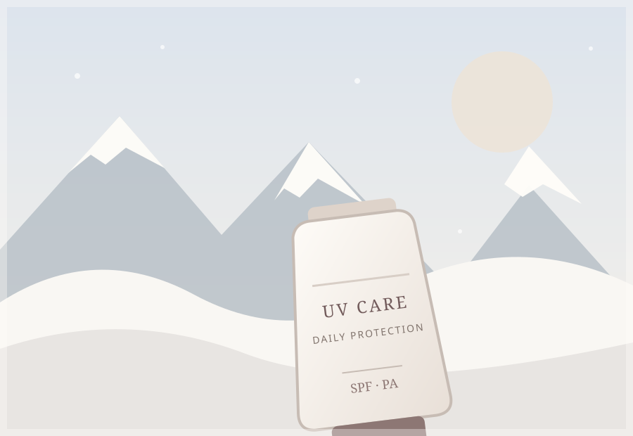

冬も日焼け止め、いる？
雪・曇りの日の考え方。
「冬は塗らなくていい？」「曇りなら大丈夫？」と迷ったら、季節だけで決めずに、外にいる時間や場所を見てみましょう。紫外線の基本と、無理なく続ける対策をまとめました。

先に答えると、冬の紫外線は夏より弱い時期が多いものの、ゼロにはなりません。だからといって、誰もが毎日同じ強さの日焼け止めを使う必要がある、という意味でもありません。外出時間、雪の有無、製品の表示や使い心地を目安に考えるのが現実的です。
冬は夏より弱くても、紫外線は届いている
地上に届く紫外線には、肌の赤みや日焼けに関係するUVBと、肌の奥まで届くUVAがあります。季節や地域、時間帯、標高、天気で強さは変わります。気象庁によると、太陽高度などの条件が同じなら、紫外線は一年のうち夏至前後に強くなり、冬から夏に向けて強まる傾向があります。冬は夏のピークより弱い日が多くても、「冬だから紫外線がない」とは言えません。
通勤や買い物など短い外出が中心の日と、長時間屋外で過ごす日では、必要な対策も変わります。まずは当日の外出予定と、気象庁などが公開するUVインデックスを確認してみましょう。
曇りの日も、紫外線がゼロになるわけではない
気象庁が示す観測の目安では、快晴時を100％とした場合、薄曇りは約80〜90％、曇りは約60％、雨は約30％のUVインデックスとなることがあります。これは観測地点・期間をもとにした平均的な目安です。雲の種類や切れ間、太陽の位置などで変わり、雲があっても快晴時を上回る場合があります。
雪の「反射率80％」は、肌に当たる量が80％増える意味ではない
新雪の紫外線反射率は、条件によって80％に達することがあります。ただしこれは雪面で反射する割合の説明で、「肌が浴びる紫外線が一律に80％増える」という意味ではありません。実際に浴びる量は、日差し、周囲の地形、雪面の広さ、滞在時間などにも左右されます。
スキー場や雪の多い場所で長く過ごす日は、雪面からの反射も考えて、日焼け止めに加えて帽子・サングラス・衣服などを組み合わせましょう。
窓ぎわや車内は、窓の種類で条件が違う
ガラスは種類や加工によって紫外線の通し方が異なります。一般にUVBは通りにくくなりますが、UVAの透過はガラスの種類で差があります。車のフロントガラスと側面の窓も同じ条件とは限りません。
そのため「室内なら必ず対策不要」「窓ぎわなら必ず日焼け止めが必要」と一律には言えません。窓の近くで長時間過ごす、車で長距離移動するなど、日差しを受ける時間が長い場合は、カーテンや衣服なども含めて自分の環境に合わせて考えましょう。
乾燥対策と紫外線対策は、役割が別
冬は空気の乾燥や暖房で、肌のつっぱりやカサつきが気になりやすい時期です。ただし「乾燥している肌は必ず紫外線ダメージを受けやすい」と断定できるわけではありません。保湿は肌のうるおいを保つため、日焼け止めは紫外線を防ぐためのケアです。それぞれ役割が違うので、保湿アイテムだけで日焼け止めの代わりにはなりません。
日焼け止めが乾燥して感じる場合は、保湿を先に行い、肌に合う使用感の製品を探す方法があります。赤みやかゆみなど異常が出たら使用を中止し、必要に応じて皮膚科へ相談してください。
SPF・PAは、使う場面に合わせて見る
SPFは主にUVB、PAはUVAに対する防止効果の目安です。数字や「＋」が大きければ、どんな場面でもその製品が最適というわけではありません。日常の短い外出か、長時間の屋外活動か、汗や水に触れるかを考え、製品表示と使用上の注意を確認しましょう。
SPF・PAは、決められた量を肌に塗って測定された値です。塗る量が少なすぎたり、汗・水・摩擦で落ちたりすると、表示どおりの効果が得られないことがあります。製品の説明に沿ってむらなく塗り、汗をかいたりタオルで拭いたりした後は塗り直してください。日本皮膚科学会のQ&Aでは、塗り直しをおよそ3時間ごとの目安として案内しています。
- 屋外にいる時間や活動内容
- 雪・水・汗・摩擦の有無
- SPF・PA、耐水性、使い方の製品表示
冬の日焼け止め、今日の判断を簡単に
- 通勤・買い物など短い外出：肌に合い、続けやすいものを製品表示に沿って使うか、衣服や日陰も含めて対策を考える。
- 屋外に長くいる日：活動に合う表示の製品を選び、十分な量を塗る。汗や摩擦の後は塗り直す。
- 雪山・雪原で過ごす日：雪の反射を考慮し、日焼け止めだけに頼らず、帽子やサングラスなども使う。
- 曇りの日：紫外線は弱まることがあってもゼロとは限らない。外出時間も見て判断する。
「冬だから塗らない」「不安だから一番強いもの」と決めつけるのではなく、その日の過ごし方に合わせて選ぶことがポイントです。
参考にした情報
- 気象庁「雲と紫外線」（曇り・雨の割合は観測に基づく目安）
- 気象庁「太陽高度と紫外線」（季節による変化について）
- 気象庁「地表面の反射と紫外線」（雪面の反射率について）
- 日本皮膚科学会「UVBとUVAはどう違うのですか？」
- 日本皮膚科学会「サンスクリーン剤の使い方」
- WHO / ICNIRP, Protecting Workers from Ultraviolet Radiation（ガラスの種類による透過の違い）
この記事は一般的な情報です。肌の症状や個別の治療については、医師・薬剤師などの専門家に相談してください。内容確認日：2026年11月6日。
美容の「どう選ぶ？」を、ヨリスグリノートで。
スキンケアや美容アイテムについて、選ぶ前に知っておきたいことをわかりやすくまとめています。
次回は、肌の状態に合わせた「保湿編」を予定しています。